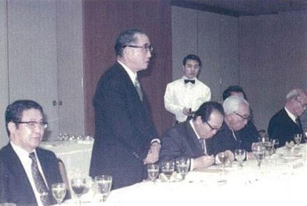
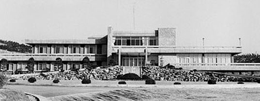
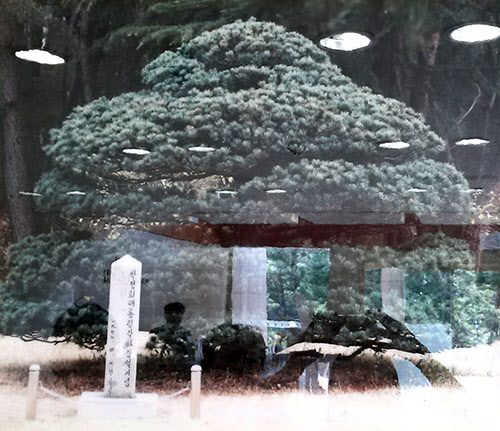

보도일 2014-12-03출처 조선일보 프리미엄조선 연재
대일청구권자금의 포항종합제철 건설비 전용, 1969년 2월 하와이 와이키키 해변에서 구원의 밧줄처럼 거머쥔 박태준의 착안에 대한 박정희의 승인과 재가. 뒷날에 포스코 사람들은 ‘하와이 구상’이라 명명한다. 그것은 한국 산업화시대에서 중대한 이정표의 하나로 삼아도 좋다. 대일청구권자금 일부를 밑천으로 삼지 않았다면 걸음마조차 제대로 해보지 못한 채 쓰러지고 말았을 포스코가 결과적으로 한국 산업화의 견인차 역할을 거뜬히 감당해줬기 때문이다.
하와이에서 박태준은 먼저 박정희에게 전화로 전후 상황을 짤막히 보고했다. 그리고 이나야마 일본철강연맹 회장(야하타제철 사장)과 만날 수 있게 하라는 전보를 도쿄의 박철언에게 날렸다. 박철언은 야스오카의 힘으로 얼마든지 그 만남을 주선할 사람이었다. 하와이에서 곧장 도쿄로 들어간 박태준은 나가노 후지제철 사장부터 찾아갔다. 두 사람은 KISA 계획안에 대한 검토용역 의뢰 과정에서 친분을 맺은 사이였다.
나가노는 기술지원에 따른 정치적 문제를 언급하고 협력 의사를 표명한 뒤 이나야마 회장에게 협조를 구하는 것이 좋겠다는 충고를 해줬다. 박태준과 같은 생각이었다. 이어서 그는 박철언과 야기 노부오를 만나 그들과 함께 야스오카를 방문했다. 이나야마와의 만남도 야스오카를 거쳐야 더 힘이 붙을 것이었다.

야스오카는 직접 응접실 앞까지 나와서 박태준의 손을 잡으며 맞이했다. 그리고 손님의 설명을 경청하고 흔쾌히 조력자로 나섰다. <야스오카가 포항제철 건설에 결정적인 기여를 하게 된다>고 했던 박철언의 증언(연재 21회)은 바로 이 장면부터 가리킨 말이었다. 다음은 박철언의 자서전『나의 삶, 역사의 궤적』에 나오는 내용을 축약한 것이다.
<야스오카는 대일청구권자금 전용에 대해 일본내각을 설득하려면 우선 일본철강업계의 확고한 지지를 얻어야 한다는 박태준의 말에도 고개를 끄덕였다. 그는 즉시 일본철강업계의 지도자 이나야마에게 전화를 걸었다. 이나야마는 일본철강연맹 회장이며 일본에서 제일 큰 제철공장인 야하타제철소 사장이었다.
“지금 제 사무실에 한국 포항제철의 박태준 사장님이 와 계십니다. 그에게 당신의 충고와 지지가 필요합니다. 한일 양국에 이익이 되는 좋은 구상을 갖고 있으니, 가능하시면 박 사장의 구상이 실현되도록 방안을 찾아주셨으면 합니다.”
야하타제철 본사는 야스오카의 사무실에서 겨우 몇 블록 떨어져 있었다. 이나야마의 응접실은 편안한 분위기였다. 박태준에게는 바닥에 깔린 짙푸른 카펫에 대한 인상이 오래 남는다. 이나야마는 손님을 정중히 맞이했다. 곤경에 빠진 젊은 동업자의 사정을 충분히 듣고 나서 고개를 끄덕였다.
“중도 폐기할 위기에 빠진 프로젝트를 구할 좋은 구상을 가지고 오셨군요. 복잡한 국제컨소시엄을 결성하지 않은 것이 오히려 다행인지도 모릅니다. 설사 건설자금을 확보할 수 있었다 할지라도 사고방식, 기술, 관리방식 등이 다른 사람들과 함께 힘을 합쳐 제철소를 짓는다는 것은 매우 어렵고 복잡한 일입니다.”
이나야마의 격려와 위로는 따뜻했다. 박태준은 일본이 기술을 지원할 수 있는가를 타진해보았다.
“기술협력은 고도의 정치성을 띠기 마련이지요. 나의 생각에는 한국의 제철소가 일본의 설비, 기자재, 기술 등을 가지고 세워지면 양국 모두에게 큰 이익이 될 것입니다. 지리적으로 가까울 뿐만 아니라 문화적으로도 공통점이 많기 때문에 의사소통에 따르는 문제점도 그만큼 줄어들 겁니다.”
한국 종합제철소 프로젝트에 적극 관심을 표명해준 이나야마. 과거의 한일관계에 편견이 없고 오히려 사과하는 입장이었다. 그래서 ‘가난한 사장’은 그에게 더 호감을 느꼈다.>
도쿄에서 서울로 돌아온 박태준은 청와대로 올라갔다.
“전화로 보고를 드린 대로 KISA는 희망이 없어 보였습니다. 일본 철강업계는 협조하겠다는 약속을 했습니다. 각하의 결심만 남았습니다.”
박정희가 주저하는 것 같기도 하고 뭔가를 깊이 셈하는 것 같기도 한 표정을 지었다. 그것은 ‘순간’이라고 해도 될 만큼 아주 짧은 동안이었다. 그러나 박태준은 꽤 긴 시간처럼 느꼈다. 이윽고 박정희가 비서를 통해 대일청구권자금이 8000만 달러쯤 남아 있다는 점을 확인했다. 그리고 자못 심각하게 말했다.
“대일청구권자금 전용은 최후의 카드다. 4월 중순에 파리에서 열리는 IECOK 총회가 끝날 때까지는 결정을 보류해서 종래의 방침을 지속하기로 하고, 그때까지는 덮어놔야 해. 섣불리 건드리면 벌집을 건드리는 격이 돼.”
IECOK(International Economic Consultative Organization for Korea)는 이름 그대로 한국을 도와주겠다는 국제경제협의체, 미국 서독 영국 프랑스 등 서방 선진국들이 1966년 4월 파리에서 구성한 대한(對韓)국제경제협의체다. IECOK 총회의 결과까지만 기다려 보자는 박정희의 판단은 복합적이었다.
한국 국회의원의 80%가 농촌 출신이며 그들이 농업지원 정책을 강력히 지지하는 정치적 지형도를 감안할 때 농업부문에 쓰기로 돼 있는 대일청구권자금 전용 문제가 사전에 유출돼서는 절대 안 된다는 것, 전용을 결심하더라도 일본정부의 공식적 동의를 얻어야 한다는 것, KISA의 기본협정 해지 시한이 1969년 9월 1일이니 KISA가 정말로 한국 종합제철 건설을 포기할 뜻이라면 그 안에 더 분명한 입장을 한국정부에 전달해줘야 하니 KISA를 압박하면서 그 태도에 따라 대통령으로서 새 결단을 해야 한다는 것.
박태준은 듣지 않아도 박정희의 그런 심경을 짐작할 수 있었다. 똑같은 각오로 똑같이 고민하고 똑같이 추구하고 있으니 이심전심이야 당연한 이치였다.
박정희가 박태준에게 새 임무를 내놓았다.
“만약 방향을 급선회하는 경우에는 임자가 일본과의 막후 협상을 직접 맡아.”
“그러겠습니다.”
그리고 김학렬(경제수석)과 박태준이 따로 만나서 정리를 했다. ‘대일청구권자금 사용 문제는 이미 용처가 정해졌고 아직은 KISA의 태도가 분명치 않으니 4월 IECOK 회의의 결과를 보고 대통령께 정식으로 보고를 올리겠다.’ 그리고 두 사람은 대통령의 재가가 있을 때까지는 그 문제를 완전히 덮어두기로 했다. 종합제철 건설 문제에 관해 성급한 말들이 새어나가게 되면 KISA 5개국과 일본이 한꺼번에 얽히는 국제적 중대 사안으로 대두하여 일이 엉망으로 꼬여버릴 것이었다.
1969년 4월 상공부 기획관리실장이었던 오원철의 회고에 의하면(연재 45회에서 다룸), 박정희의 경제팀 관료들이 대일청구권자금 포철 전용 아이디어를 처음 착안한 때는 그해 4월 중순의 파리 IECOK 회의가 ‘한국 종합제철에 대한 차관 제공을 거부’한 직후였다고 한다(파리에 갔다가 빈손으로 귀국하는 길에 도쿄 호텔에 들러서 구수회의를 하는 중에 양윤세가 처음 ‘대일청구권자금 전용’이라는 말을 했고, 즉시 자신이 일본 통산성 철강국장과 만나서 의사 타진을 하여 긍정적 답변을 받아냈다라는 내용임).
그런데 그때 포항종합제철 1기 건설의 차관 조달 문제를 다뤘던 관료들이 아주 뒷날에 남긴 회고(『코리언 미러클』, 2013년)에는 ‘양윤세 경제기획원 국장’이 ‘김학렬 경제기획원 부총리’에게 “청구권자금으로 제철이나 조선산업을 하면 어떻겠느냐”라는 의견을 냈고, 이에 김학렬 부총리가 “내가 올라가서 각하께 잘 말씀을 드려보겠다”고 했다고 나와 있다. 그렇다면 두 사람이 그 대화를 나눈 시기는 아무리 빨라도 1969년 6월 2일 이후라고 봐야 한다.
왜냐하면 그해 6월 1일까지는 박충훈이 경제기획원 부총리였고 김학렬은 청와대 경제수석이었던 것이다. 김학렬의 “올라가서”라는 표현에도 그가 청와대 안에서 근무한 때가 아니었다는 점이 드러나 있다.
이렇게 오원철의 기억과 양윤세의 기억은 서로 일치하지 않는데, 1969년 6월의 박정희에게는 대일청구권자금 포철 전용이 이미 최후 카드이자 확고부동한 방침이었다. 다만 한 가지 분명한 것은, 그 시점이 정확하진 않아도 대강 1969년 4월 중순에서 6월 중순 사이의 어느 날부터는 경제팀 관료들도 대일청구권자금의 생산적인 전용을 위하여 움직이게 되었다는 사실이다.

1969년 2월 하순, 박태준은 포스코 공채 1기 신입사원을 뽑았다(포스코 제5대 회장을 맡게 되는 이구택 총각도 합격했다). 회사에 돌아와서 KISA의 차관 조달이 막힐 것이라는 소식을 전하면 “전부 도망갈 것 같아서”(연재 44회에 나옴) 미국 출장의 결과를 도저히 이실직고할 수 없는 사장의 심정을, 그들은 까맣게 모르고 있었다.
기획관리부장 황경로(1992년 10월 제2대 회장을 맡게 됨)에게 “회사 청산 절차를 준비해 놓으시오”라는 비밀특명을 남기고 미국으로 날아갔다가 겉보기에는 빈손으로 돌아온 것 같은데 예정에 맞춰 ‘공채 1기 신입사원’을 선발하는 박태준. 이 모순된 그의 행위 속에 포항제철의 내일을 밝히는 등불이 밝혀져 있었다. 물론 그것은 비록 두어 달포의 기다림이 더 필요한 일이긴 해도 박정희가 승인·재가한 것이나 다름없는 ‘대일청구권자금 전용 아이디어(하와이 구상)’와 그 실현의 디딤돌과 같은 이나야마의 적극적인 협력 의사였다.
그리고 박태준은 희망의 시간표에 따라 ‘영일대(迎日臺)’라는 포스코의 첫 영빈관도 착공한다. 머잖아 포항으로 들어올 외국 기술자들과 바이어들의 거처를 준비하는 일이었다. 1969년 7월에 준공된 영일대는 포항제철 1기 공사가 진행되는 기간에 현장을 방문한 대통령의 숙소로도 활용된다. 1970년 4월 1일과 10월 25일, 그리고 1971년 9월 2일에 박정희는 혼자서 또는 가족들과 영일대에서 일박을 한다.
